F.15 Cyclic Quadrilateral — Folios¶
Archival manuscript scans and diplomatic transcriptions from seelig’s notebooks for F.15 (Cyclic Quadrilateral) (SeeligNotebooks).
Folio 0098 (Page 1 of 16): Cyclic Quad with Angles theta, 2*theta, 3*theta, 4*theta (Cropped Copy, FWS 2015/4/9)¶

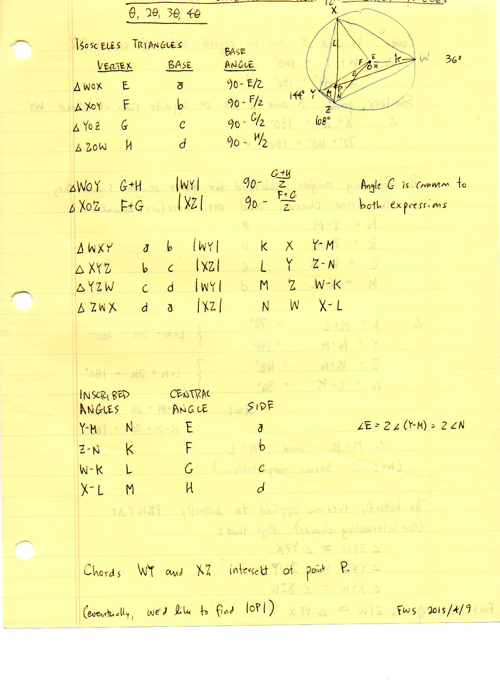
Folio 0098 (original scan 0098.jpg) from resources/seelig/15_cyclic-quadrilateral.¶
Diplomatic Mathematical & Geometric Transcription
Diplomatic Transcription — Folio 0098 (0098.jpg, Sheet 1 of 16):
Tabulates the four central isosceles triangles \(\triangle WOX, \triangle XOY, \triangle YOZ, \triangle ZOW\) and sets the goal of finding \(|OP|\).
Folio 0099 (Page 2 of 16): Cyclic Quad with Angles theta, 2*theta, 3*theta, 4*theta (Full Title, FWS 2015/4/9)¶

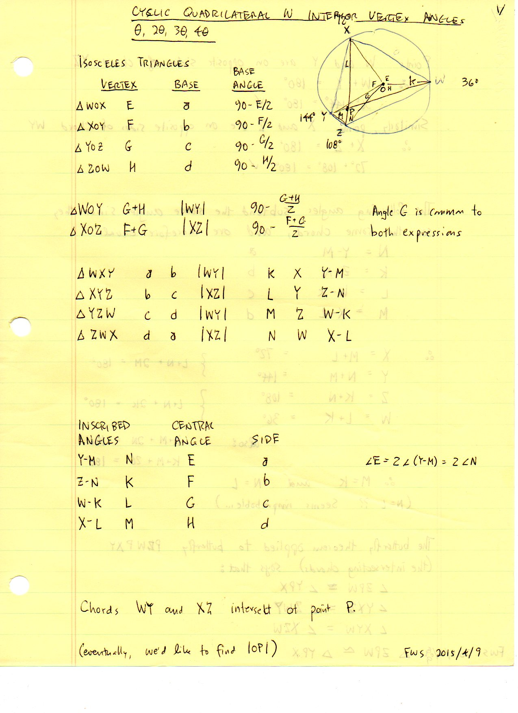
Folio 0099 (original scan 0099.jpg) from resources/seelig/15_cyclic-quadrilateral.¶
Diplomatic Mathematical & Geometric Transcription
Diplomatic Transcription — Folio 0099 (0099.jpg, Sheet 2 of 16):
Uncropped master page showing full title and central/inscribed angle relations.
Folio 0100 (Page 3 of 16): Base Angle Equalities M = K, N = L & Butterfly Similarity (Page 2)¶

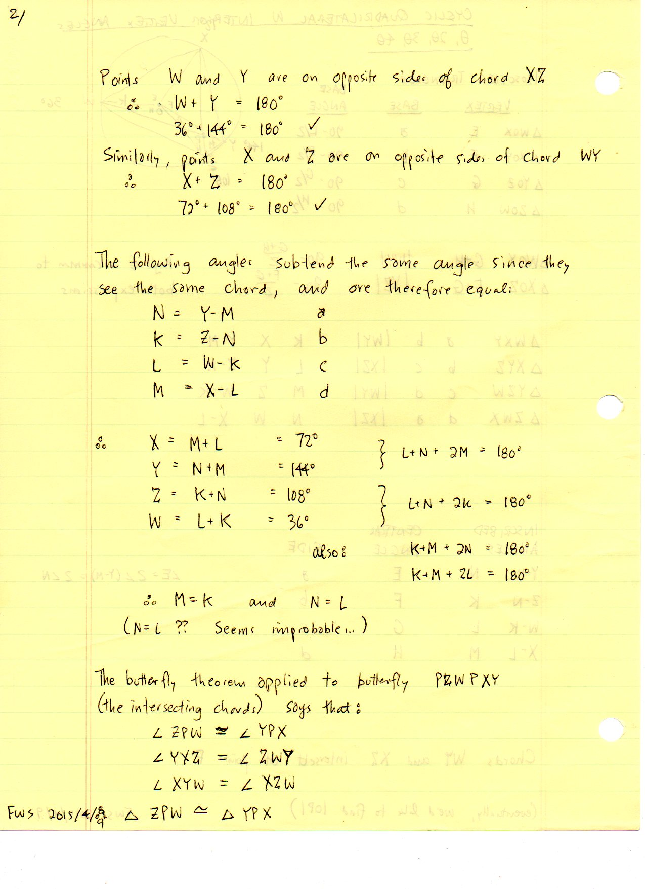
Folio 0100 (original scan 0100.jpg) from resources/seelig/15_cyclic-quadrilateral.¶
Diplomatic Mathematical & Geometric Transcription
Diplomatic Transcription — Folio 0100 (0100.jpg, Sheet 3 of 16):
Deduces \(M = K\) and \(N = L\) and applies \(\triangle ZPW \simeq \triangle YPX\).
Folio 0101 (Page 4 of 16): Inscribed Angles 36, 72, 144, 108 in Unit Circle (FWS Begun April 6, 2015)¶

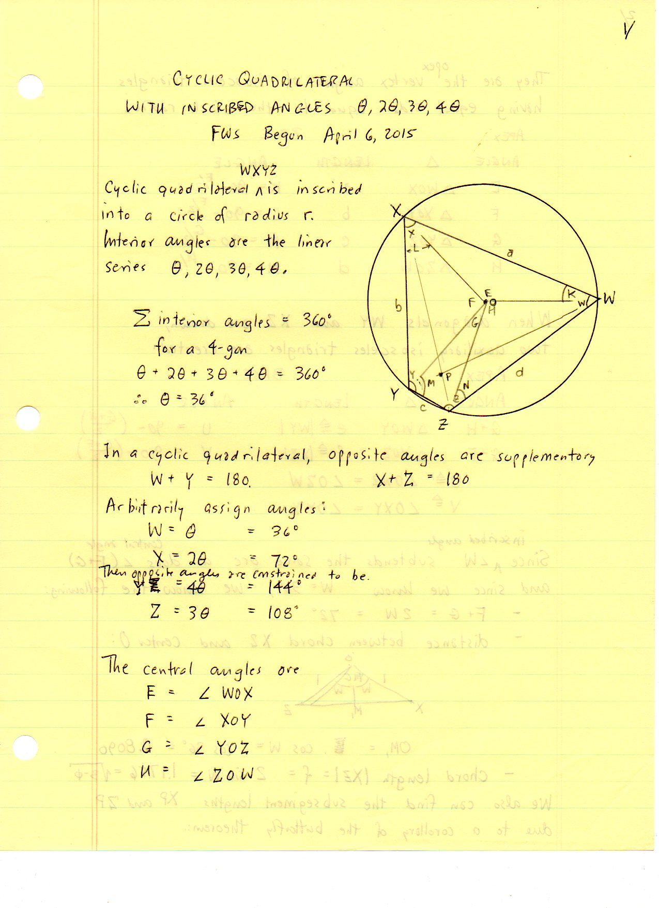
Folio 0101 (original scan 0101.jpg) from resources/seelig/15_cyclic-quadrilateral.¶
Diplomatic Mathematical & Geometric Transcription
Diplomatic Transcription — Folio 0101 (0101.jpg, Sheet 4 of 16):
Establishes \(\theta = 36^\circ\) and vertex ordering \(W=36^\circ, X=72^\circ, Y=144^\circ, Z=108^\circ\) so opposite angles sum to \(180^\circ\).
Folio 0102 (Page 5 of 16): Diagonal |XZ| = 2 sin 36 = sqrt(3 - phi) (Page 2)¶

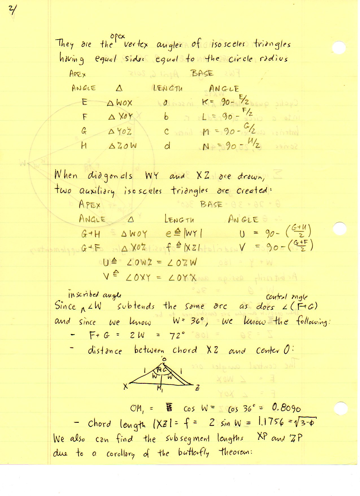
Folio 0102 (original scan 0102.jpg) from resources/seelig/15_cyclic-quadrilateral.¶
Diplomatic Mathematical & Geometric Transcription
Diplomatic Transcription — Folio 0102 (0102.jpg, Sheet 5 of 16):
Computes midpoint distance \(|OM_1| = \cos 36^\circ = \phi/2\) and chord \(|XZ| = \sqrt{3-\phi} \approx 1.1756\).
Folio 0103 (Page 6 of 16): Power of Diagonal Intersection P (Page 3, citing Vol. I, pp. 265–270)¶

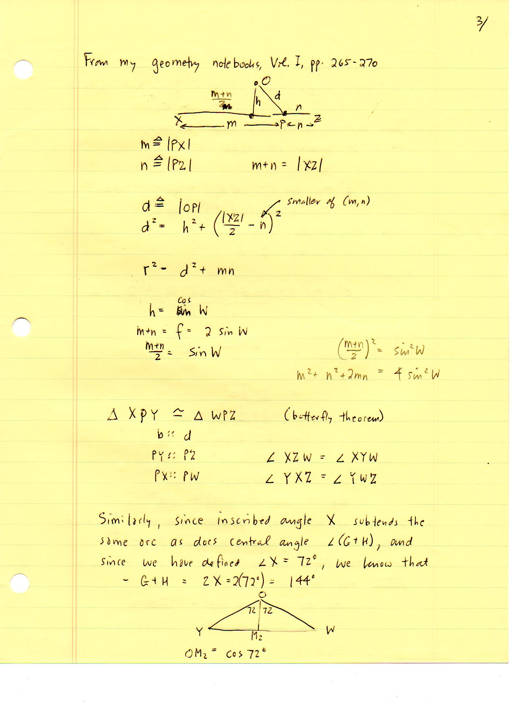
Folio 0103 (original scan 0103.jpg) from resources/seelig/15_cyclic-quadrilateral.¶
Diplomatic Mathematical & Geometric Transcription
Diplomatic Transcription — Folio 0103 (0103.jpg, Sheet 6 of 16):
Relates \(d = |OP|\) to diagonal segments \(m = |PX|, n = |PZ|\) via \(r^2 = d^2 + mn\).
Folio 0104 (Page 7 of 16): Diagonal |YW| = 2 sin 72 = phi*sqrt(3 - phi) (Page 4)¶

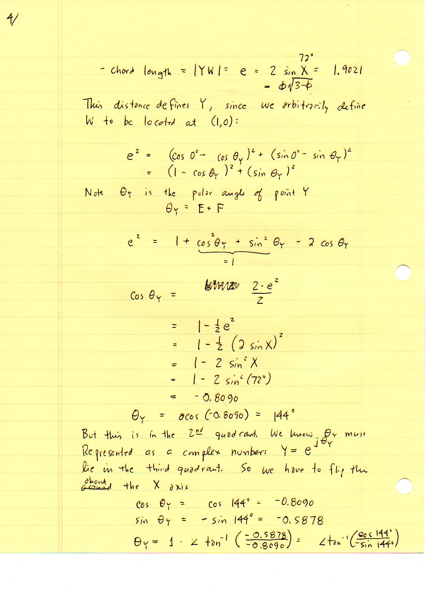
Folio 0104 (original scan 0104.jpg) from resources/seelig/15_cyclic-quadrilateral.¶
Diplomatic Mathematical & Geometric Transcription
Diplomatic Transcription — Folio 0104 (0104.jpg, Sheet 7 of 16):
Computes \(|OM_2| = \cos 72^\circ \approx 0.3090\) and \(|YW| = \phi\sqrt{3-\phi} \approx 1.9021\).
Folio 0105 (Page 8 of 16): Non-Cyclic Trap When Angles Are Ordered Sequentially¶

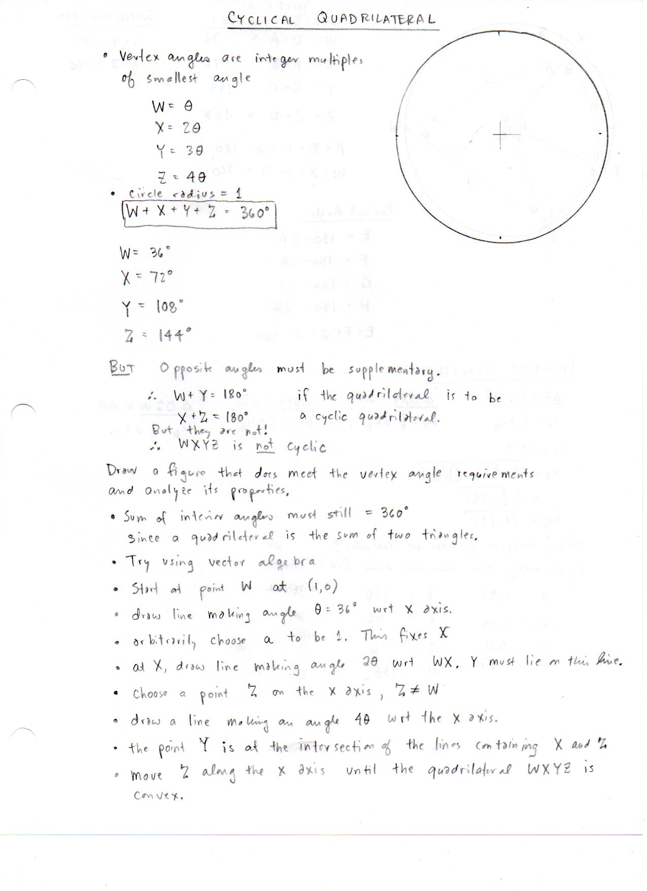
Folio 0105 (original scan 0105.jpg) from resources/seelig/15_cyclic-quadrilateral.¶
Diplomatic Mathematical & Geometric Transcription
Diplomatic Transcription — Folio 0105 (0105.jpg, Sheet 8 of 16):
Shows that if \(W=36^\circ, X=72^\circ, Y=108^\circ, Z=144^\circ\) in order around the perimeter, \(W + Y \ne 180^\circ\) so \(WXYZ\) is not cyclic.
Folio 0106 (Page 9 of 16): Empirical C.a.R. Measurements of Side Lengths & Central Angles¶

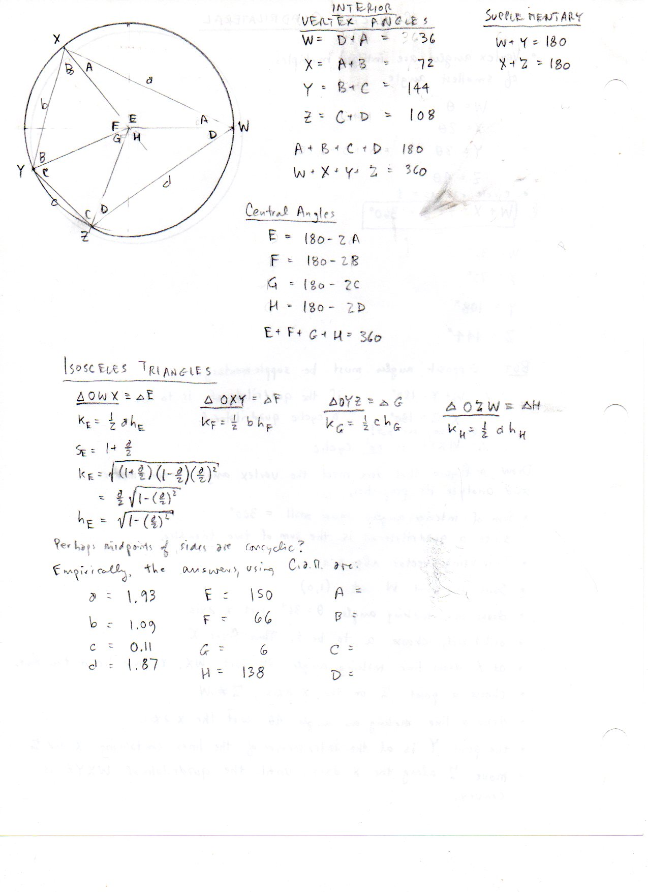
Folio 0106 (original scan 0106.jpg) from resources/seelig/15_cyclic-quadrilateral.¶
Diplomatic Mathematical & Geometric Transcription
Diplomatic Transcription — Folio 0106 (0106.jpg, Sheet 9 of 16):
Records C.a.R. values \(a=1.93, b=1.09, c=0.11, d=1.87\) and central angles \(150^\circ, 66^\circ, 6^\circ, 138^\circ\).
Folio 0107 (Page 10 of 16): Central Angles in Arithmetic Progression (36, 72, 108, 144)¶

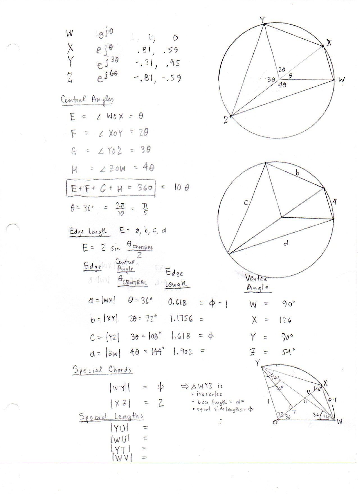
Folio 0107 (original scan 0107.jpg) from resources/seelig/15_cyclic-quadrilateral.¶
Diplomatic Mathematical & Geometric Transcription
Diplomatic Transcription — Folio 0107 (0107.jpg, Sheet 10 of 16):
Places vertices at \(e^{j0}, e^{j\theta}, e^{j3\theta}, e^{j6\theta}\), obtaining golden-ratio sides \(a = \phi-1, c = \phi\) and diagonals \(|WY| = \phi, |XZ| = 2\).
Folio 0108 (Page 11 of 16): Four Central Isosceles Triangles OWX, OXY, OYZ, OZW¶

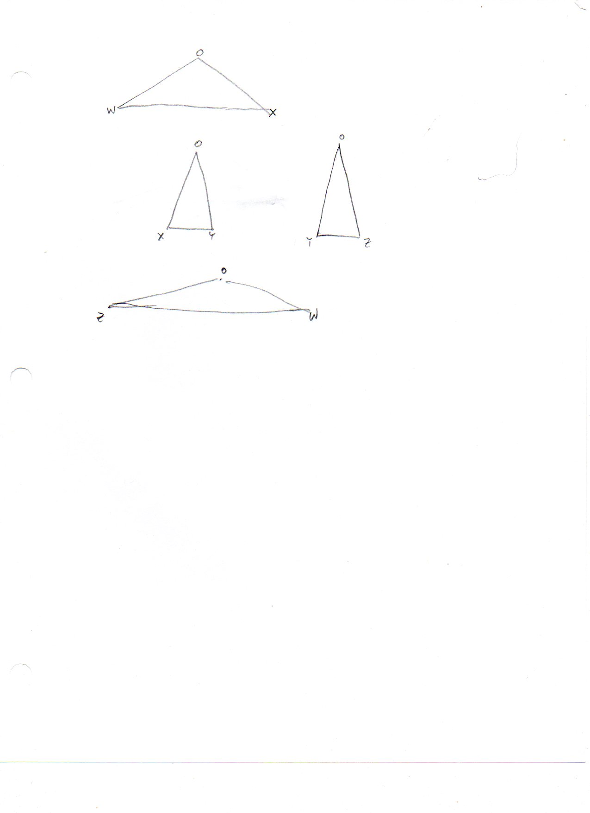
Folio 0108 (original scan 0108.jpg) from resources/seelig/15_cyclic-quadrilateral.¶
Diplomatic Mathematical & Geometric Transcription
Diplomatic Transcription — Folio 0108 (0108.jpg, Sheet 11 of 16):
Isolated sketches of the four central sector triangles and their base angles.
Folio 0109 (Page 12 of 16): Vector Construction of the Non-Cyclic Quadrilateral¶

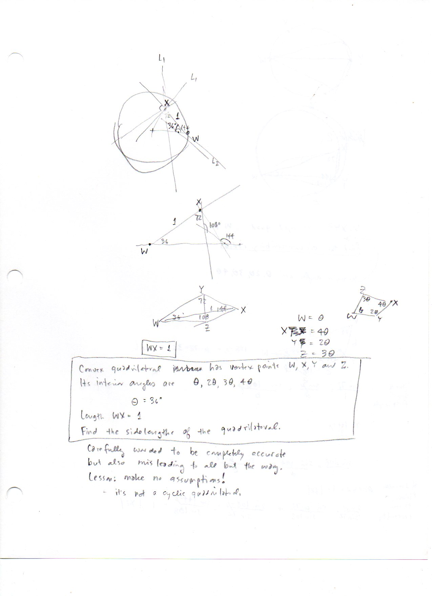
Folio 0109 (original scan 0109.jpg) from resources/seelig/15_cyclic-quadrilateral.¶
Diplomatic Mathematical & Geometric Transcription
Diplomatic Transcription — Folio 0109 (0109.jpg, Sheet 12 of 16):
Constructs the non-cyclic quadrilateral with \(WX = 1\) and comments on ambiguous problem statements.
Folio 0110 (Page 13 of 16): Ptolemy’s Theorem & Parameterization by Angle mu (Part 1)¶

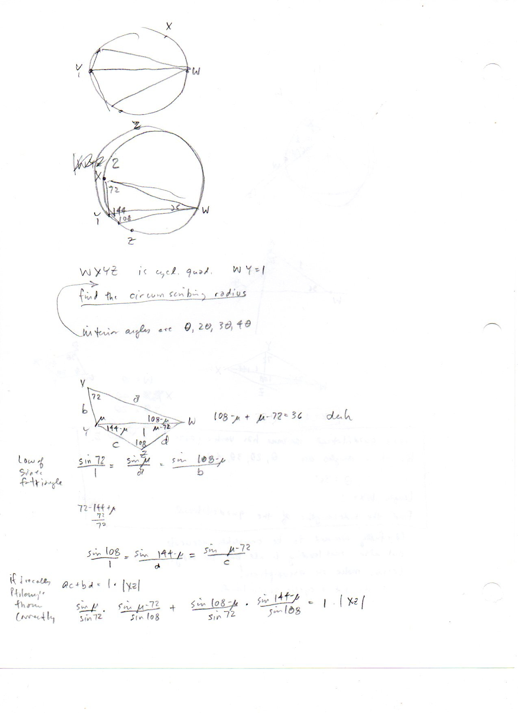
Folio 0110 (original scan 0110.jpg) from resources/seelig/15_cyclic-quadrilateral.¶
Diplomatic Mathematical & Geometric Transcription
Diplomatic Transcription — Folio 0110 (0110.jpg, Sheet 13 of 16):
Normalizes diagonal \(WY = 1\) and applies the Law of Sines and Ptolemy’s theorem \(ac + bd = |XZ|\).
Folio 0111 (Page 14 of 16): Product-to-Sum Reduction for |XZ| (Part 2)¶

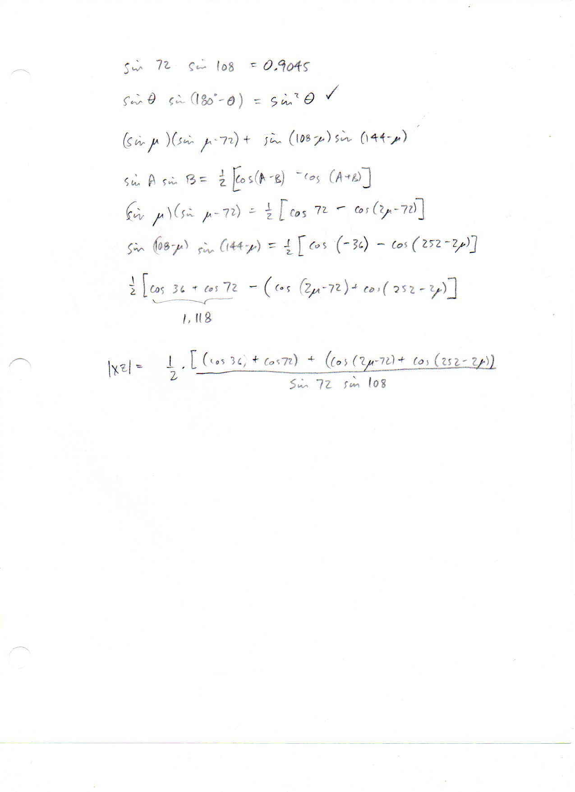
Folio 0111 (original scan 0111.jpg) from resources/seelig/15_cyclic-quadrilateral.¶
Diplomatic Mathematical & Geometric Transcription
Diplomatic Transcription — Folio 0111 (0111.jpg, Sheet 14 of 16):
Expresses \(|XZ|\) in terms of \(\cos(2\mu - 72^\circ)\) and \(\cos(252^\circ - 2\mu)\).
Folio 0112 (Page 15 of 16): An Open Cyclic Quadrilateral Problem (Fred Seelig, April 2015)¶

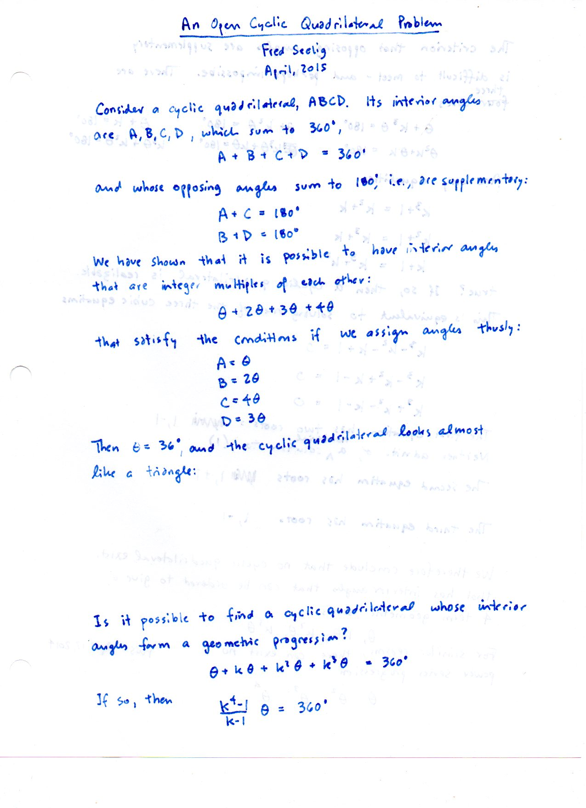
Folio 0112 (original scan 0112.jpg) from resources/seelig/15_cyclic-quadrilateral.¶
Diplomatic Mathematical & Geometric Transcription
Diplomatic Transcription — Folio 0112 (0112.jpg, Sheet 15 of 16):
Poses the question of whether a cyclic quadrilateral can have interior angles in geometric progression \(\theta, k\theta, k^2\theta, k^3\theta\).
Folio 0113 (Page 16 of 16): Impossibility Proof via Cubic Factorization¶

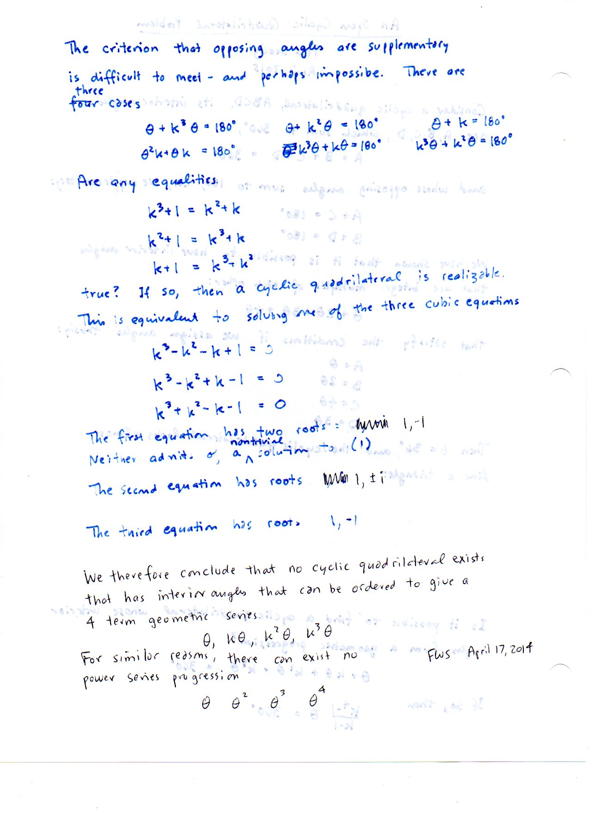
Folio 0113 (original scan 0113.jpg) from resources/seelig/15_cyclic-quadrilateral.¶
Diplomatic Mathematical & Geometric Transcription
Diplomatic Transcription — Folio 0113 (0113.jpg, Sheet 16 of 16):
Proves that \(k^3 - k^2 - k + 1 = 0\), \(k^3 - k^2 + k - 1 = 0\), and \(k^3 + k^2 - k - 1 = 0\) have only roots \(\pm 1, \pm i\), ruling out any non-trivial geometric progression.